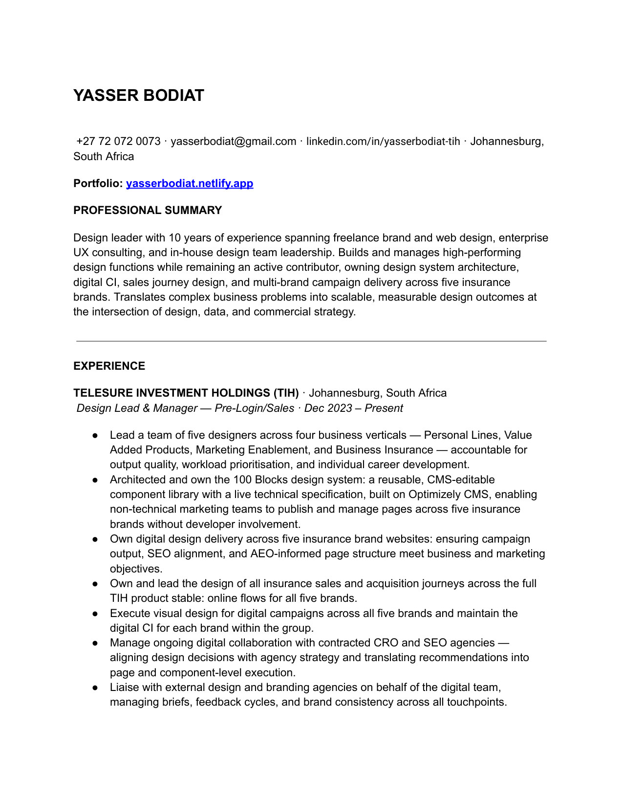
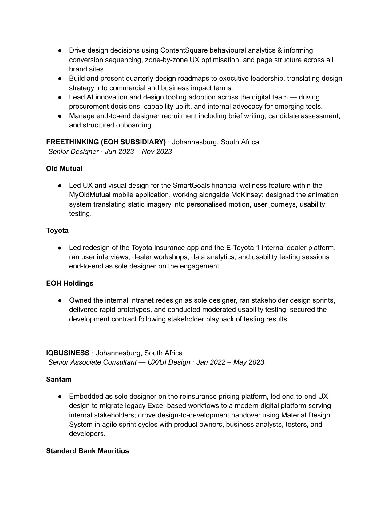
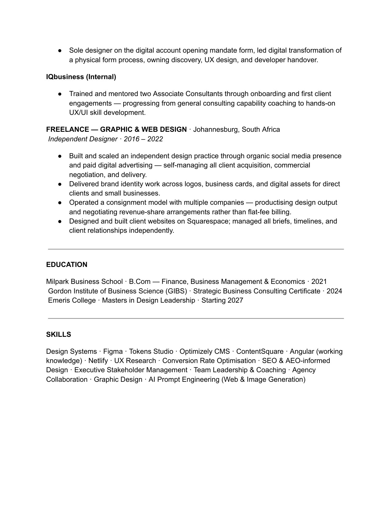
sales flow redesign
Redesigning the short-term insurance sales flows across all 5 brands and for all products.
66%Flow reduction — strategic redesign to reduce form fatigue and abandonment
4.5%Increase end-to-end digital policy sales to 4.5% from 2.5%
project overview
Part of my role within TIH is to optimise our sales flows for short-term insurance on digital platforms. Instead of simply optimising small portions of the flow, I proposed a big-bang rebuild/redesign which would enhance the customer experience and mitigate abandonment by reducing the cognitive load customers currently experience while simultaneously bringing more joy to an otherwise cumbersome and frictional experience.
the problem statement
The current sales journey is long and cumbersome, which risks losing customers along the way. Entry points provide little context, and motivation to complete can taper off without stronger cues to build trust and momentum. By rethinking the flow through UX optimisation, we can create a simpler, more engaging experience that sets the stage for growth and confidently accommodates upcoming multi-risk and multi-vehicle inclusions.
our process
research
build
validate
release
using data to define
Our data analysts consistently tracked key metrics across the sales funnel, including abandonment rates, premium views, and end-to-end conversions. With an end-to-end close rate of 1.8%, it became clear that meaningful improvement would require more than incremental tweaks. To drive higher conversions in the next financial year, we rebuilt the sales flow from the ground up — focusing on speed, clarity, and a more future-fit experience across the entire funnel.
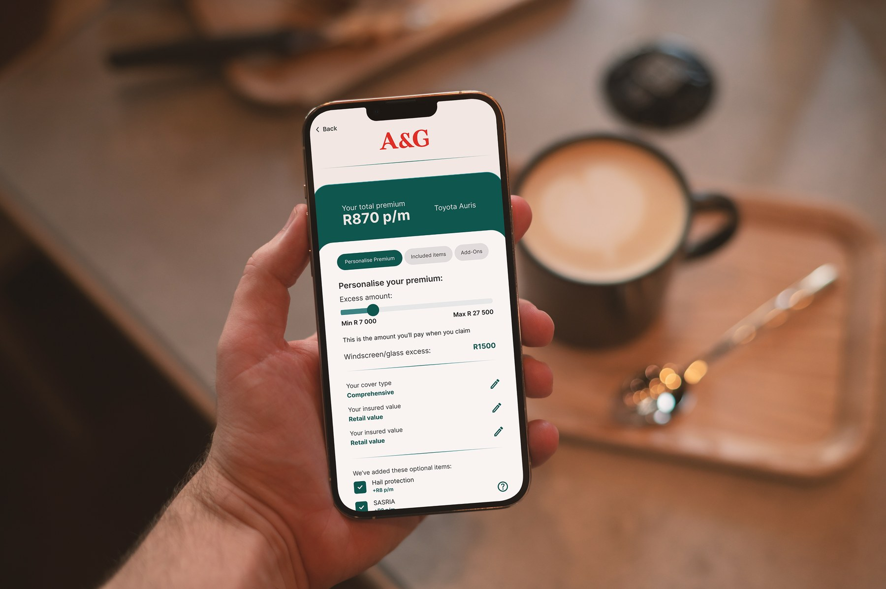
research, research + more research..
Research is not a one-off phase in our process — it's something we continuously invest in where time allows. Alongside internal data, my team and I benchmarked established UX patterns across insurance, fintech, and best-in-class consumer products to understand where friction typically emerges and what genuinely drives completion.
By analysing models such as MQPS vs OQPS, reviewing behavioural research, and studying proven principles from teams like Headspace and Google, we were able to ground design decisions in evidence rather than intuition. This approach ensured the redesigned flow wasn't just visually improved, but deliberately structured to reduce cognitive load, build trust earlier, and maintain momentum throughout the journey.
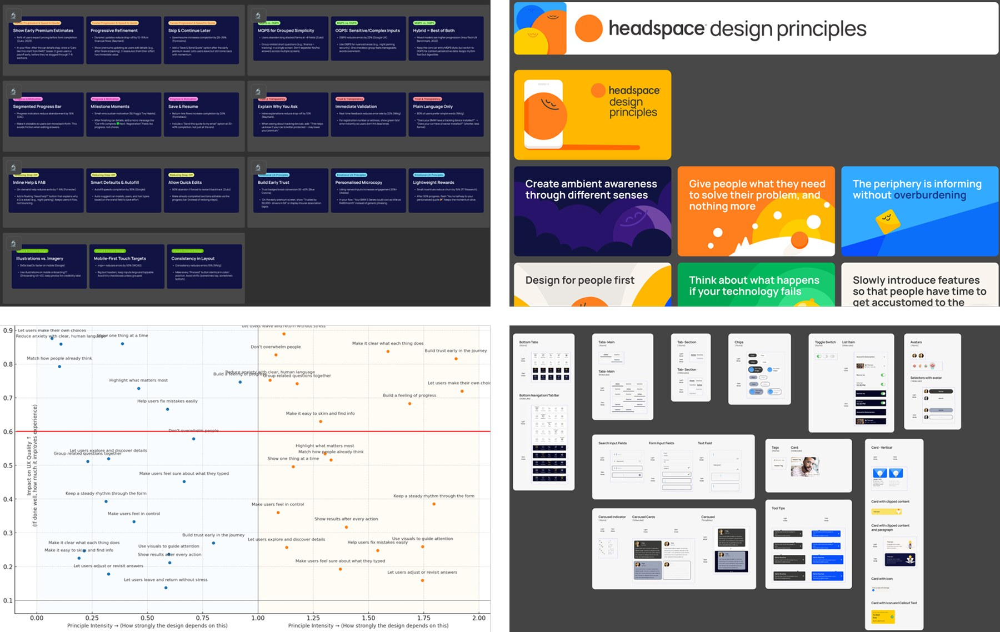
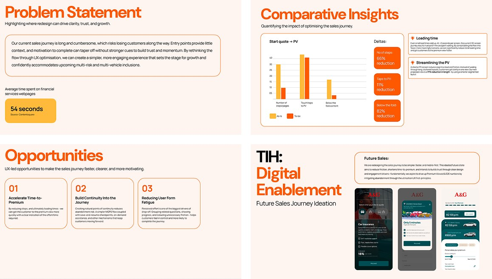


quantifiable metrics
66%Reduction in new flow length (end-to-end)
82%Reduction in below the fold content
27No. of pages reduced from start quote to premium viewed
key outcomes
Reduce friction and cognitive load across the entire sales journey
Increase E2E conversion with trust and momentum
Deliver a scalable, future-fit sales framework
taking the vision to leadership
Once the future sales flow had been defined, I first took the concept through the Head of Digital and the Executive for Customer Experience to validate the direction and pressure-test the thinking. Following alignment at that level, I was invited to present the proposal to the executive steering committee, including the CEO.
The presentation focused on clearly articulating the problem, the data-led rationale for a ground-up rebuild, and how the proposed flow would improve conversion while setting a scalable foundation for the future. The outcome of the session was clear alignment and approval to proceed with the rebuild and redesign of the sales journey.
Below are selected slides from the executive presentation used to align leadership on the proposed future sales flow.


full prototype
In addition to outlining the problem and the data-led rationale for a ground-up rebuild, we showcased a fully interactive prototype of the end-to-end journey. This allowed the executive team to experience the proposed flow firsthand, making the impact of the changes — in speed, clarity, and overall usability — immediately tangible. The session concluded with clear alignment and encouragement to proceed with the rebuild and redesign.
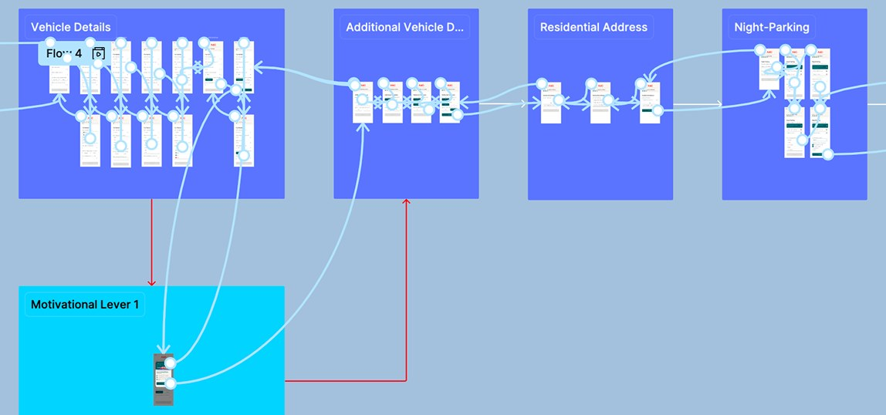
from approval to build
Copy and screenshots to follow.
validating the experience with real users
Copy and screenshots to follow.
from system to scale
Copy and screenshots to follow.
marketing templatisation
A component system that took page publishing out of the dev queue.
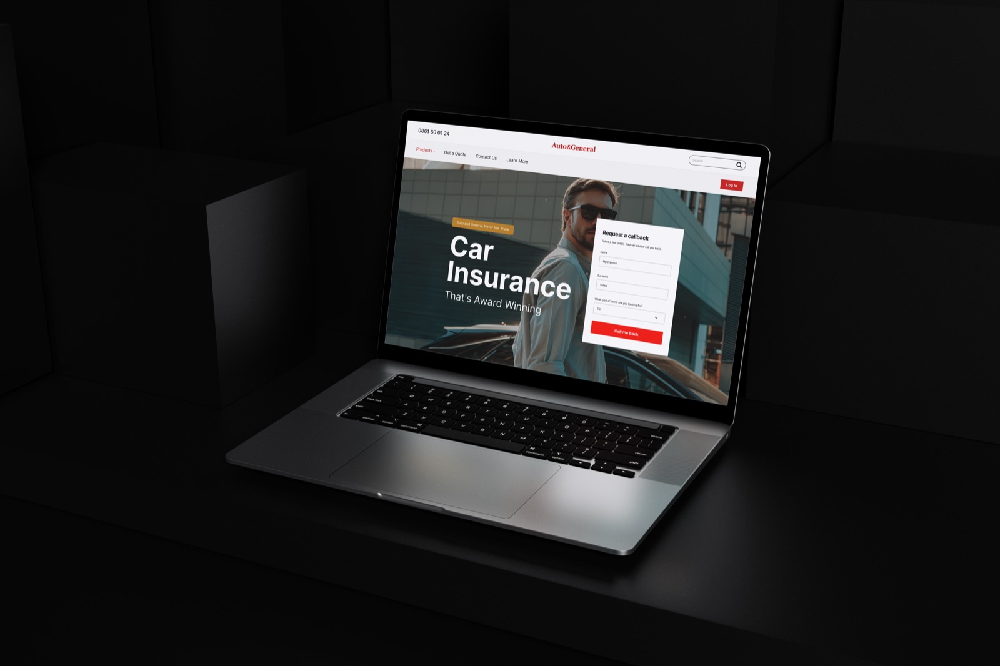
the problem
Every new marketing page at TIH depended on developer availability. Five brands, no shared component system, and marketing teams unable to build or edit even simple pages without engineering capacity — which meant brand and content decisions were bottlenecked by dev queue, not by strategy.
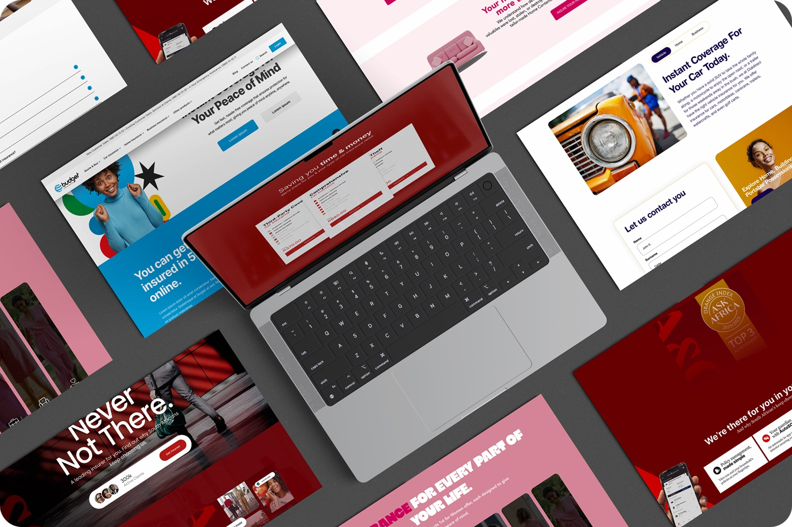
grounding the work in evidence
Before any component was built, I established the case. I audited industry UX research, benchmarked best-in-class insurance and SaaS sites, and mapped the gap between where TIH's brands were and where they needed to be — presenting findings to leadership to align around a shared technical direction.
industry best practice research
Reviewed proven UX & conversion principles to define the benchmark we should aspire to.
as-is audit of current sites
Audited current sites against the benchmark to identify key gaps and opportunities.
inspiration scanning
Understood effective patterns and approaches to explore ways of closing the gaps.
table a — best-practice benchmark
| Segment | Insight |
|---|---|
| Micro-Interactions / Emotional Design | Thought-out micro-interactions lift conversions by up to 40%.saleshub.ca |
| Non-Generic CTAs | Smart, personalised CTAs convert 202% better than generic ones.blog.hubspot.com |
| Trust Markers & Social Proofing | Adding a trust badge increased conversions by 42% in A/B tests.nestify.io |
| Hero Videos | A background hero video can boost conversions up to 80% (Forbes data).vwo.com |
| Visual Storytelling | Visual content drives a 150% surge in engagement and a 27% higher click-through rate compared with text-only content.medium.com |
| Whitespace | Adding whitespace around key elements boosts conversion and speeds reading by 20%.smashingmagazine.com |
| Copy | Unbounce's benchmark: pages with under 100 words convert 50% better than pages with 500+ words.smashingmagazine.com |
| Interactive Content | Interactive (dynamic) content is shown to double conversions versus static formats.embryo.com |
table b — as-is audit of current sites
| Segment | As-Is | Why it matters |
|---|---|---|
| Social Proof | None of our sites surfaces real testimonials above the fold. | Real voices feel more trustworthy than brand claims; immediate social validation builds trust with customers. |
| Micro-Interactions & Emotional Design | Overall feel is static / transactional, with limited feedback or delight elements. | Responsive, "alive" interfaces signal quality and care; users feel guided and reassured that the brand is modern and attentive. |
| Headline | Headlines compete with dense sub-copy, carousel slides, or badge overlays, diluting a single, memorable benefit. | Clear, focused messaging lets visitors instantly grasp "what's in it for me," boosting engagement and reducing bounce. |
| Compelling Visuals | Heavy reliance on generic stock across all brands; very limited animated or interactive design elements. | Owned visuals elevate perceived quality, differentiate from competitors, and build an emotional connection faster than text. |
| Captivating Heroes | All have functional CTAs, but heroes feel cluttered and copy-dense; none balance whitespace, headline, and visual hierarchy like modern best-in-class sites. | A clean, confident hero is the first thing most customers will see. |
| Copy | Averaging well over 600 words per page. The heavy copy reduces the ability to quickly scan. | Concise, skimmable copy respects visitors' time, feels modern, and lets visuals and CTAs shine — improving first impressions. |
aligning leadership around a clear opportunity
With the evidence in place, I led the stakeholder alignment process — presenting the case for a unified design system to executive and marketing leadership across five brands. The outcome was a shared understanding of the problem and buy-in to build a scalable solution rather than continue with one-off page builds.
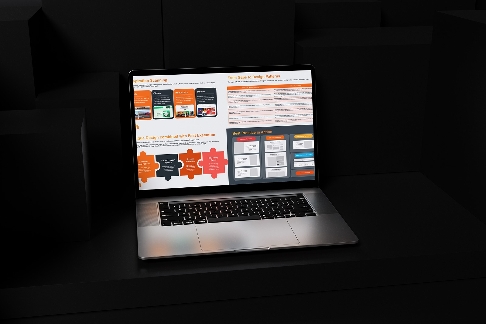
the solution: a shared technical design framework
Marketing Templatisation is a reusable, CMS-editable block component library built in Optimizely (Angular). Non-technical marketing staff can assemble and publish pages across all five TIH brands without developer involvement. The system is built as infrastructure — a set of decisions that hold across five different brand identities at once.
container & breakpoints
1100px fixed desktop inner container. Responsive mobile at 100% minus 16px each side. Single 1199px breakpoint. No tablet view.
token naming
Functional naming (brand-primary, brand-secondary) not brand-literal — the same block re-skins across all five brands without touching the underlying component.
theme engine
Five semantic themes (style-primary, style-white, style-secondary, style-interactive, style-surface) govern how any block can present. Theme switching works via variable name assignment, not hex values — making brand-agnostic theming possible at scale.
block naming convention
3-letter category codes plus sequential variant numbers (e.g. HRO-001) — a shared vocabulary between design, content, and dev that removes ambiguity from every handoff and ticket.
spacing & type scale
80px/40px block padding, 40px column gutter, Tailwind CSS font scale — applied consistently regardless of which brand skin is active.
live technical specification
The full system specification is hosted as a live HTML document on Netlify — not a static handoff. It includes a changelog, block anatomy, token definitions, and responsive rules. It is the single source of truth for design and the external dev team.
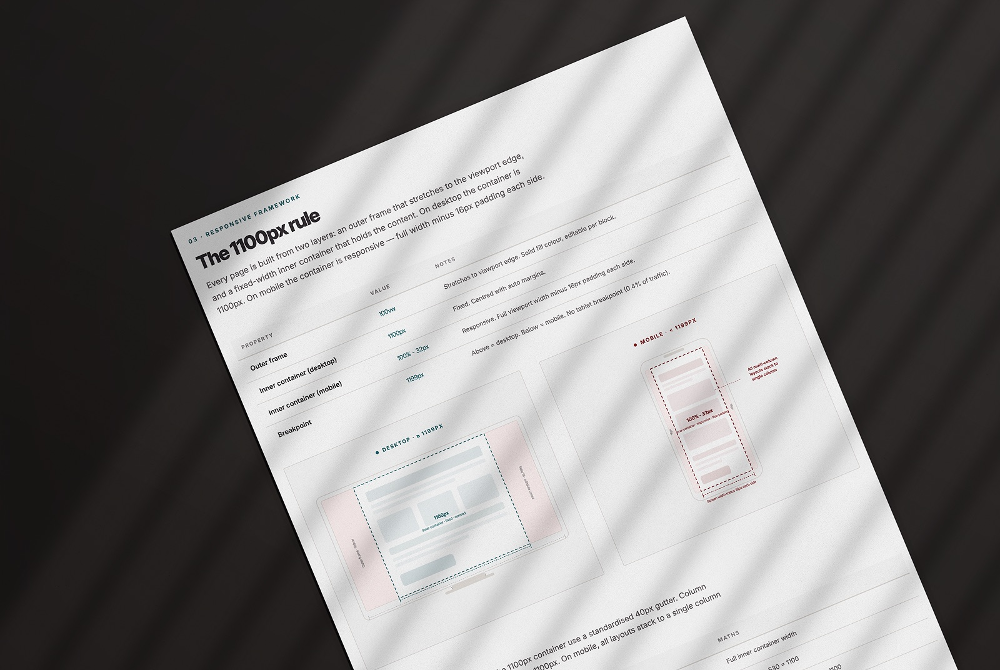
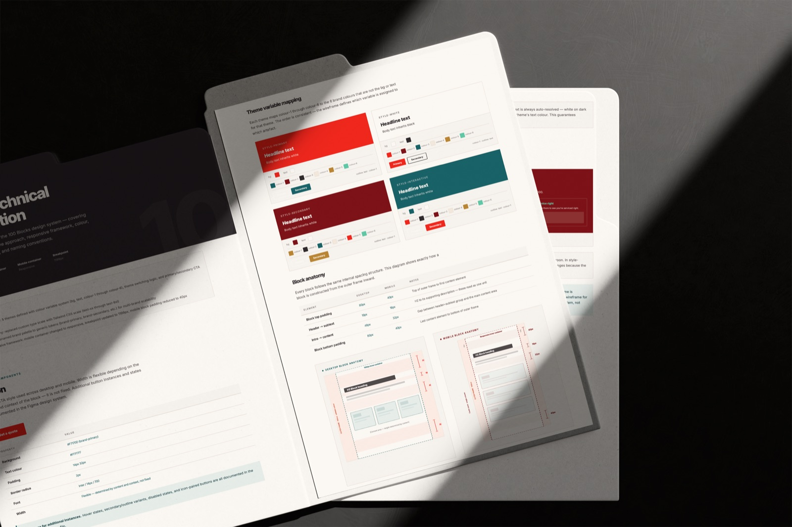
responsive behaviour defined
Every block in the system has a defined mobile behaviour — not retrofitted after desktop build but specified at the point of component design. The 1199px breakpoint collapses layouts to single column, adjusts padding to 16px per side, and reorders content where visual hierarchy demands it.
adoption & rollout
-
Stage 1
First brand go-live (October 2026)
-
Stage 2
Configured onto all remaining brands
Marketing Templatisation is set to go live on its first brand in October 2026. From there it will be configured onto the remaining brands, with each completed build serving as the proof case for the next.
operational impact
Once live, marketing teams will be able to build and publish pages without raising a developer ticket. Design direction is enforced at the token level, not through review cycles. All five brands can share one system without any brand losing its individual identity.
faster campaign turnaround
Campaigns and CRO optimisation ship far faster, with no dev queue sitting between an idea and a published page.
design freed for strategy
The design team's focus shifts from mundane website updates to strategic redesign and higher-value work.
optimised by default
Every block bakes in UX best practice, CRO, SEO and AEO optimisation — so pages start optimised, not retrofitted.
governance & sustainability
The system is maintained through a live Netlify-hosted specification with a versioned changelog. Design decisions are documented at the point they are made — not reconstructed after the fact. The external dev team and internal designers work from the same source of truth, keeping design intent intact through every sprint.
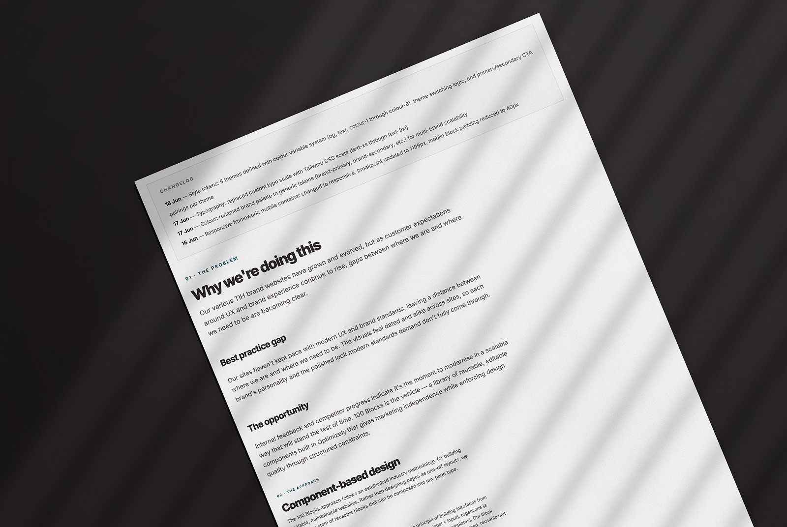
gallery
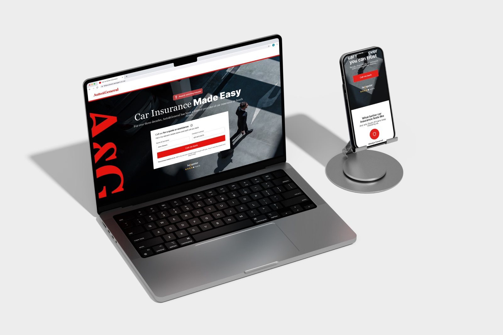
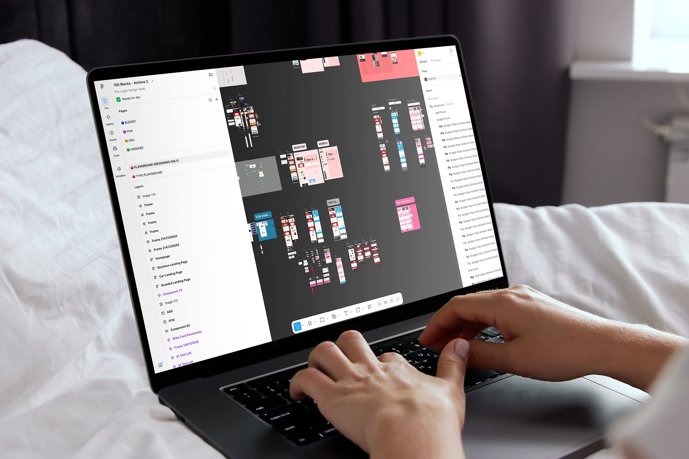